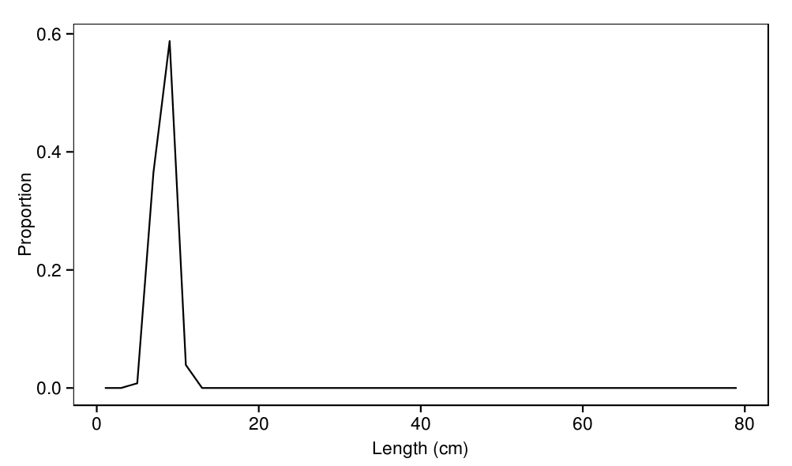
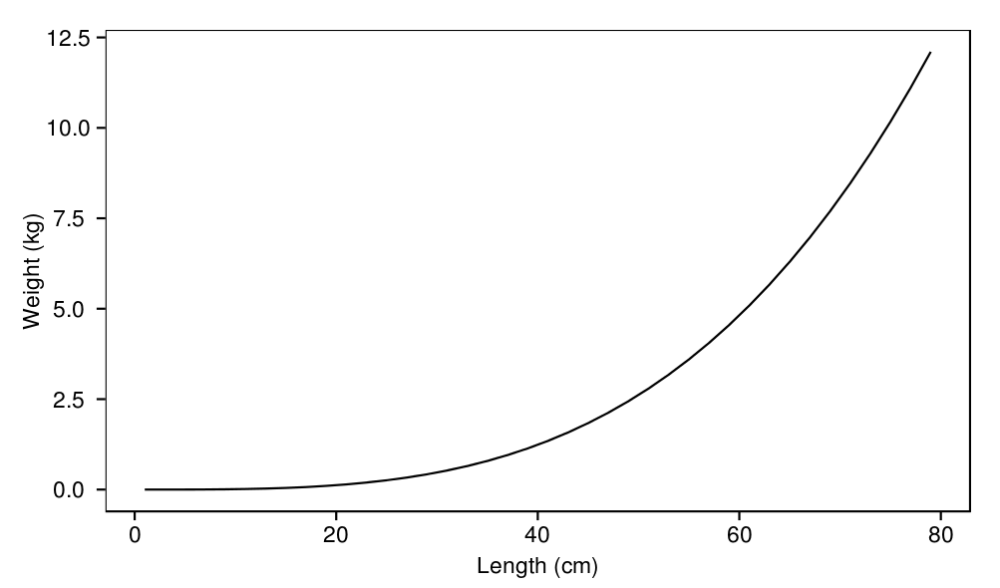
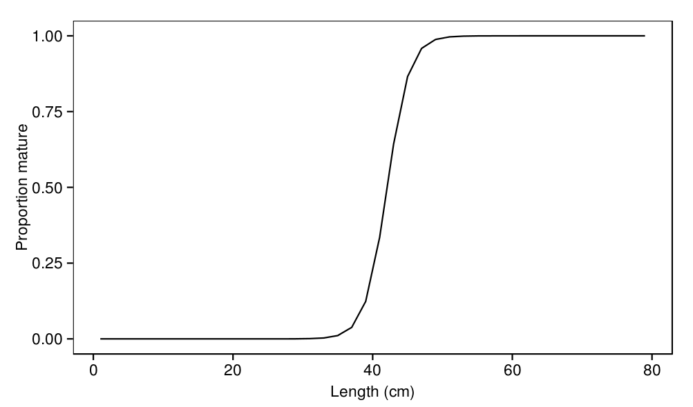
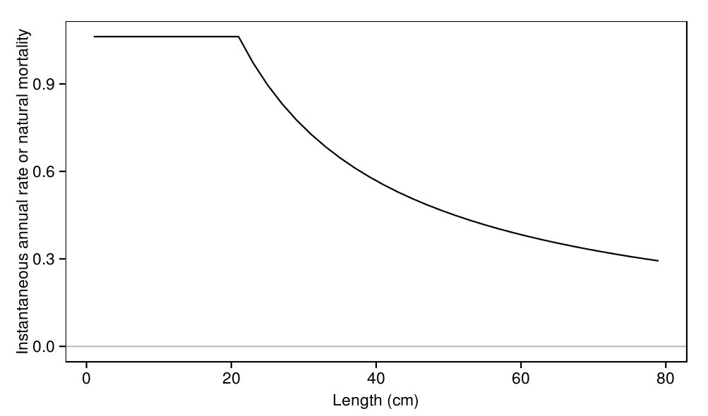
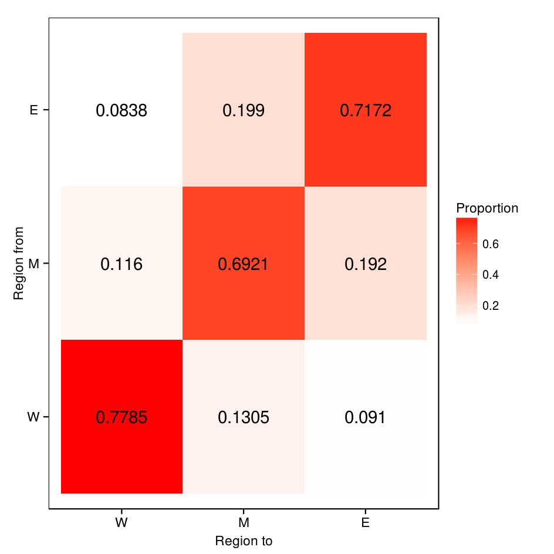
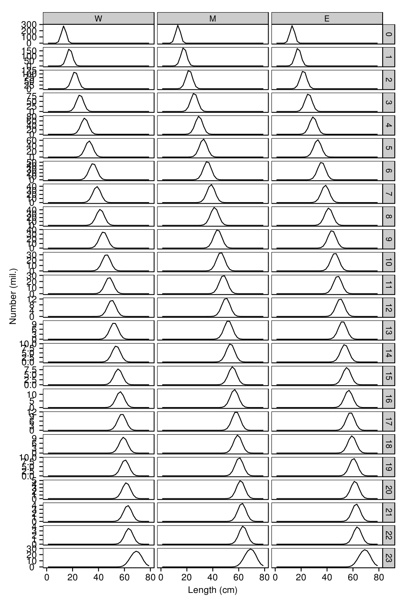
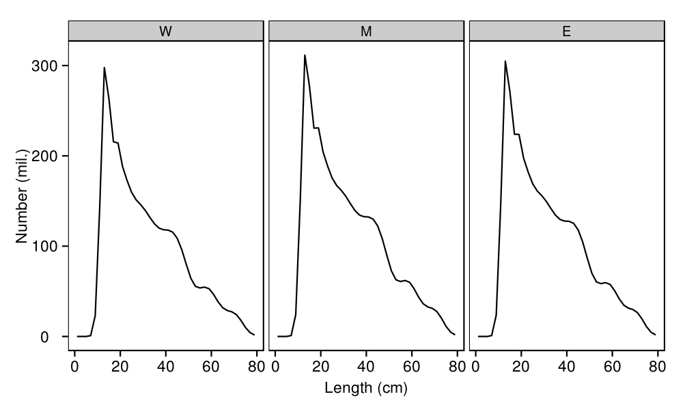
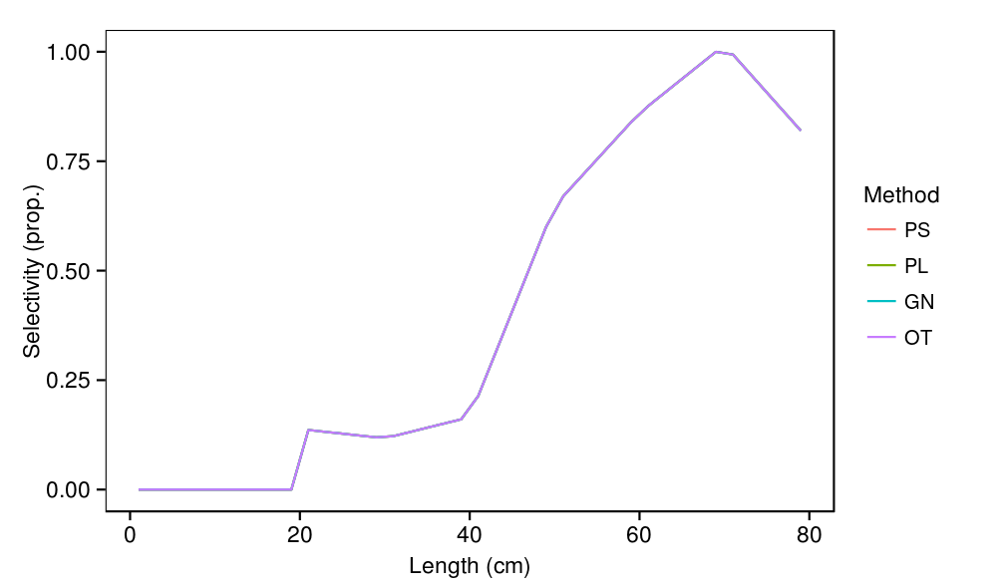

Displays of model outputs
This document displays model outputs (files in the
model/outputs
folder) which are generated from the default parameter values defined in
parameters/input/parameters.cila
using
./ioskj.exe run
.
source('../../common.R',local=T)
load(c(
'lengths','recruits_sizes',
'growth_increments','growth',
'mortalities',
'weights','maturities','selectivities',
'movement',
'numbers'
),from='../output')
Recruits
print( ggplot(recruits_sizes,aes(x=length,y=value)) + geom_line() + labs(x="Length (cm)",y="Proportion") )
Growth
print( ggplot(growth_increments,aes(x=length,y=value)) + geom_hline(y=0,colour='grey') + geom_line() + labs(x="Length (cm)",y="Quarterly growth increment (cm)") )

print( ggplot(growth) + geom_tile(aes(y=length,x=length_from,fill=value)) + scale_fill_gradient(low="white",high="red") + geom_abline(a=0,b=1) + labs(x="Length from (cm)",y="Length to (cm)",fill="Proportion") )

Weight
print( ggplot(weights,aes(x=length,y=value)) + geom_line() + labs(x="Length (cm)",y="Weight (kg)") )
Maturity
print( ggplot(maturities,aes(x=length,y=value)) + geom_line() + labs(x="Length (cm)",y="Proportion mature") )
Mortality
print( ggplot(mortalities,aes(x=length,y=value)) + geom_hline(y=0,colour='grey') + geom_line() + labs(x="Length (cm)",y="Instantaneous annual rate or natural mortality") )
Movement
print( ggplot(movement,aes(y=region_from,x=region,fill=value,label=round(value,4))) + geom_tile() + scale_fill_gradient(low="white",high="red") + geom_text() + labs(y="Region from",x="Region to",fill="Proportion") )
Unfished equilbrium state
The following figures show the distributions of lengths in the population in an unfished state.
print( ggplot(numbers) + geom_line(aes(x=length,y=value/1e6)) + facet_grid(age~region,scale='free_y') + labs(x="Length (cm)",y="Number (mil.)") )
print( ggplot(ddply(numbers,.(region,length),summarise,numbers=sum(value)/1e6)) + geom_line(aes(x=length,y=numbers)) + facet_grid(.~region) + labs(x="Length (cm)",y="Number (mil.)") )
Selectivities
print( ggplot(selectivities,aes(x=length,y=value,colour=method))+ geom_line() + labs(x="Length (cm)",y="Selectivity (prop.)",colour='Method') )